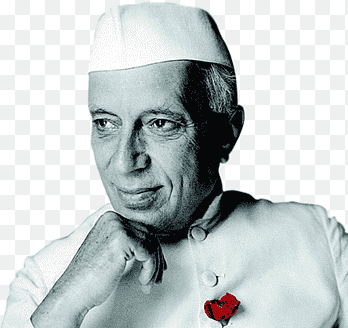

CHIDRENS' DAY

PT.JAWAHARAL NEHRU
WHAT IS CHIDREN'S DAY?
Jawaharlal Nehru was born on November 14th, 1889, at Allahabad. His father, Moti Lal Nehru was a famous barrister. He had his primary education from English tutors at home. He was sent to England for high school studies. He took up education in law. After completing the law, he returned to India. He had a burning passion for his country’s independence.Children’s Day is celebrated every year for celebrating the birth and anniversary of Pandit Jawaharlal Nehru and celebrating the youth of our country who are the future of our nation, according to Nehru Ji. He loved the children of our country, and children used to call him “Chacha Nehru” with adoration.Every year Children’s Day is celebrated on the 14th of November. It is praised for denoting the birth anniversary of Pt. Jawaharlal Nehru. He was India’s first Prime Minister and was well known as ‘Chacha Nehru’ among the general public. He generally emphasized children’s privileges, care, and education.
WHY WE CELEBRATE CHILDREN‘S DAY?
In 1964, after Pt. Jawaharlal Nehru's death,the Government of India declared 14 November as Children’s Day.His adoration and friendship for children were pure. Kids additionally love him and warmly called him Chacha. Nehru became the interim prime minister of India in September 1946, with the League joining his government with some hesitancy in October 1946.He once said, “The children of the present day will make the India of tomorrow. How we bring them up will decide the future of the nation.
WHAT IS THE DECORATION OF CHILDREN‘S DAY?
Before Children’s Day, Schools are decorated, and children are welcomed with little token gifts and blessings.Different competitions of academics, games, quizzes, fests are the significant attraction of the occasion. The Award function, Gifts distribution, refreshment arrangements, lunch parties are likewise seen in schools. Different NGOs distribute food, books, and gifts to the unprivileged youngsters. Just before Children’s Day, Various government plans are also organized. The government offers free Education for rural zones and slum regions.People remember the ideologies to remember Chacha Nehru and follow their wordings. Political Figures pay their praise to Pt. Jawaharlal Nehru’s contribution and recollect his commitment and belief systems for our country.
SOMETHING MORE ABOUT HIS LIFE.
Nehru described his childhood as a "sheltered and uneventful one". He grew up in an atmosphere of privilege at wealthy homes, including a palatial estate called the Anand Bhavan. His father had him educated at home by private governesses and tutors.[12] Influenced by the Irish theosophist Ferdinand T. Brooks' teaching,[13] Nehru became interested in science and theosophy.[14] A family friend, Annie Besant subsequently initiated him into the Theosophical Society at age thirteen. However, his interest in theosophy did not prove to be enduring, and he left the society shortly after Brooks departed as his tutor.[15] He wrote: "for nearly three years [Brooks] was with me and in many ways, he influenced me greatly".[14]
Nehru became an ardent nationalist during his youth.[17] The Second Boer War and the Russo-Japanese War intensified his feelings. Of the latter he wrote, "[The] Japanese victories [had] stirred up my enthusiasm. ...Nationalistic ideas filled my mind. ... I mused of Indian freedom and Asiatic freedom from the thraldom of Europe."[14] Later, in 1905, when he had begun his institutional schooling at Harrow, a leading school in England where he was nicknamed "Joe",[18] G. M. Trevelyan's Garibaldi books, which he had received as prizes for academic merit, influenced him greatly.[19] He viewed Garibaldi as a revolutionary hero. He wrote: "Visions of similar deeds in India came before, of [my] gallant fight for [Indian] freedom and in my mind, India and Italy got strangely mixed together.
Nehru's theosophical interests had induced him to the study of the Buddhist and Hindu scriptures.[16] According to B. R. Nanda, these scriptures were Nehru's "first introduction to the religious and cultural heritage of [India]. ...[They] provided Nehru the initial impulse for [his] long intellectual quest which culminated…in The Discovery of India."[16]
IN POINTS ABOUT CHILDREN'S DAY.
1.Children’s Day is also called ‘Bal Diwas.
2.There is a worldwide occasion devoted to children’s privileges and proper care called ‘Universal Children’s Day.
3.Universal Children’s Day is generally known on the 20th of November.
4.In India, Children’s Day is the national salute to the first Prime Minister, Pt. J. L. Nehru.
5.Children’s Day festivity conveys a message for protecting youth from social evils present in our society.
MORE IN POINTS AND QUESTION ANSWERS
Question 1.
What is culture by Nehru essay?
Answer:
“Culture is the widening of the mind and of the spirit. It is never a narrowing of the mind or a restriction of the human spirit or the country’s spirit”.
Question 2.
How is Jawaharlal Nehru?
Answer:
Jawaharlal Nehru was born on 14 November 1889 in Adilabad, India. His Father name is Motilal Nehru who served as twice president of India for National Congress for the years of 1919 and 1928.
Question 3.
Who is Jawaharlal Nehru write a short note on him?
Answer:
Jawaharlal Nehru was the first Prime Minister of Independent India. He was born on November 14, 1889 in allahabad India and died on May 27 1964 at new delhi. He worked as prime minister for the years of 1947-64.
Question 4.
Which speech of Jawaharlal Nehru is referred to in the essay?